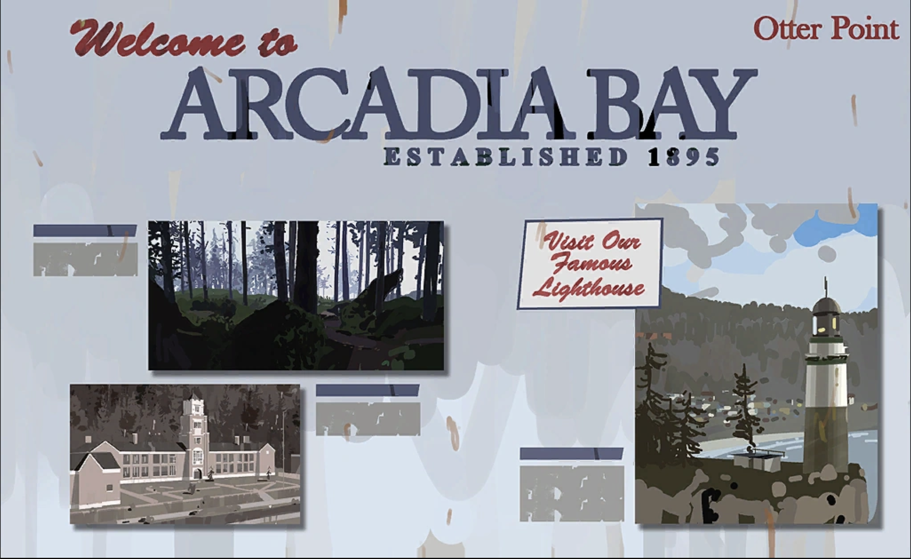

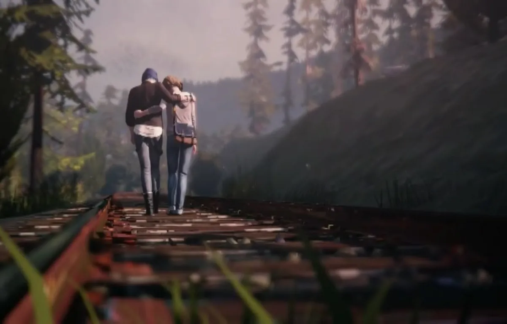
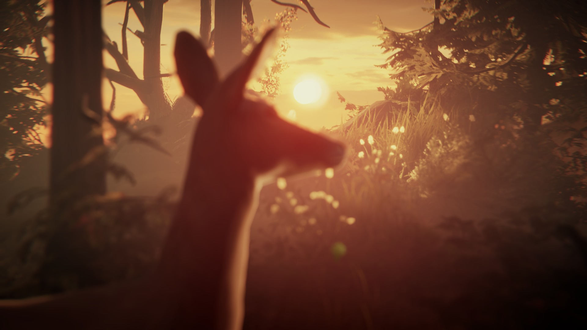
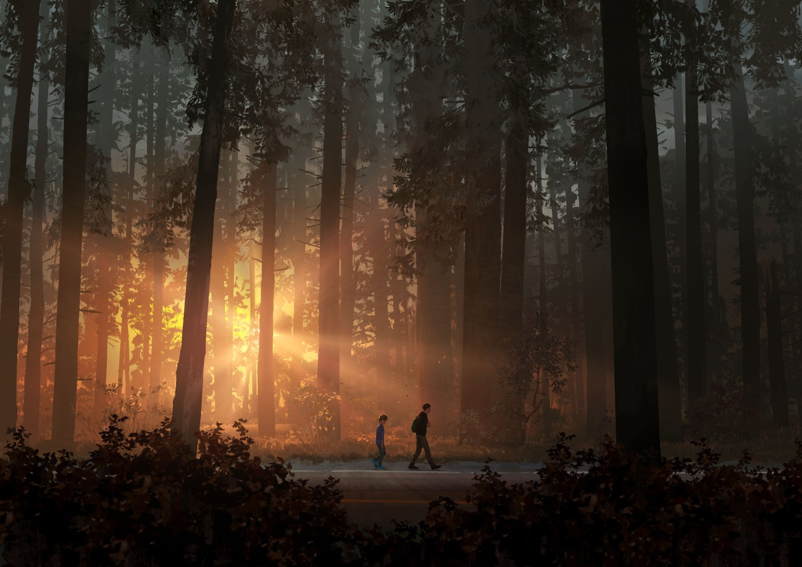
Forest Info
Deep in the quiet woods of Arcadia Bay, the forest feels like a world untouched by time. Sunlight filters through the trees like broken glass, and every step echoes a memory you didn’t know you had. This is where lost things wander — whispers, secrets, and sometimes… a spirit guiding the way. The forest is peaceful, but also mysterious. It reminds you that nature listens, even when people don’t. And if you're lucky, you might catch a glimpse of the doe — a symbol of hope, purity, and the paths we’re meant to follow.
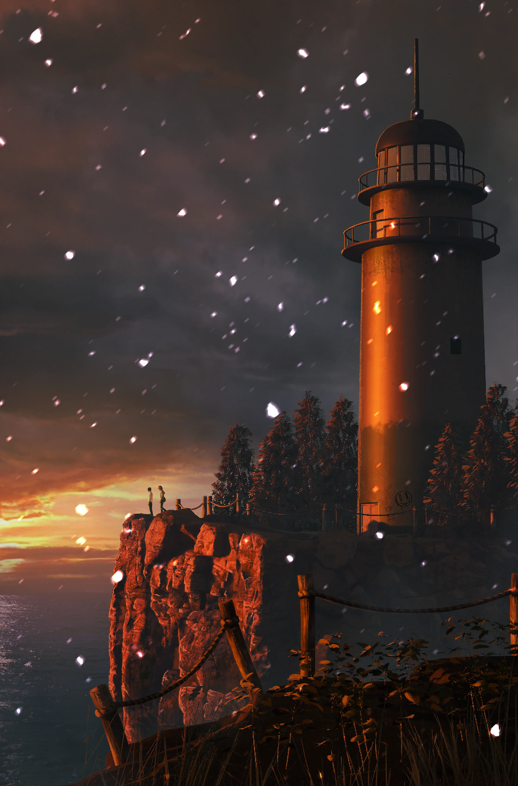
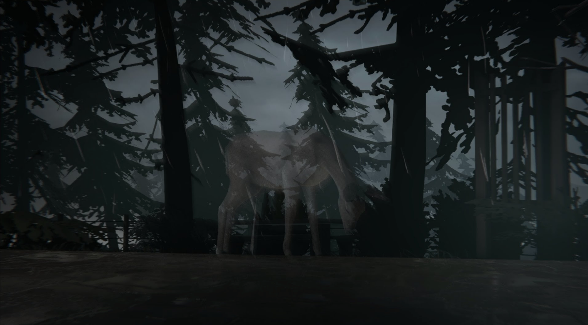
Visit our famous lighthouse Visit our beautiful forest Visit our iconic school More information
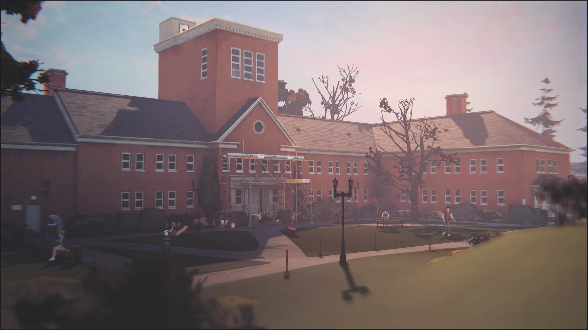
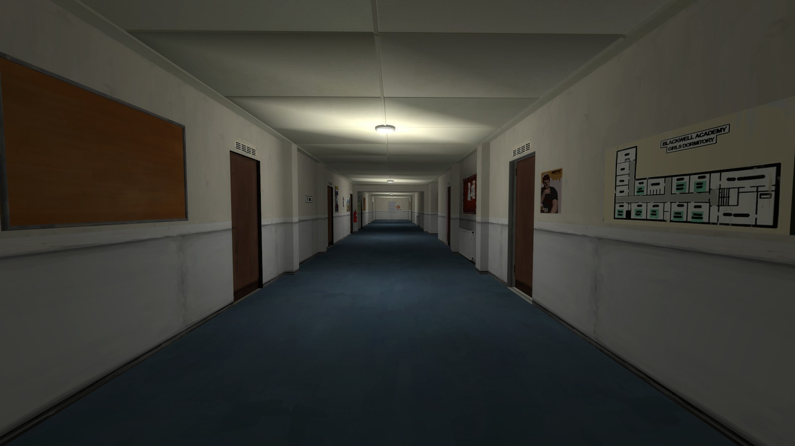
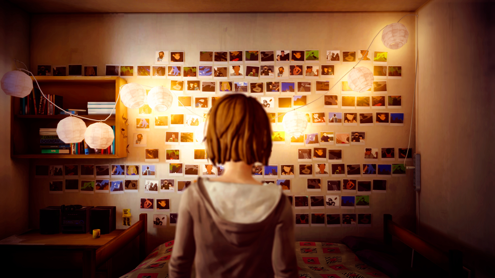
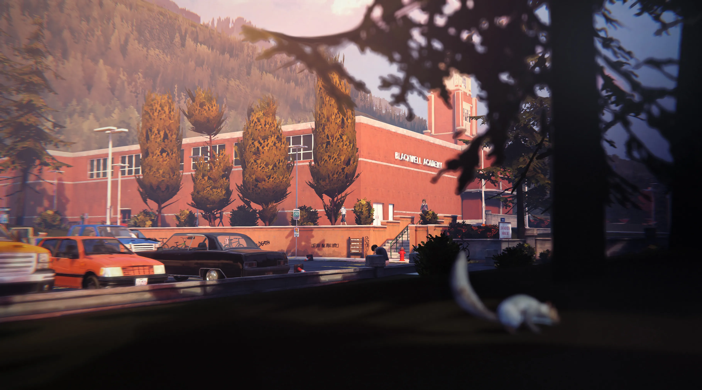
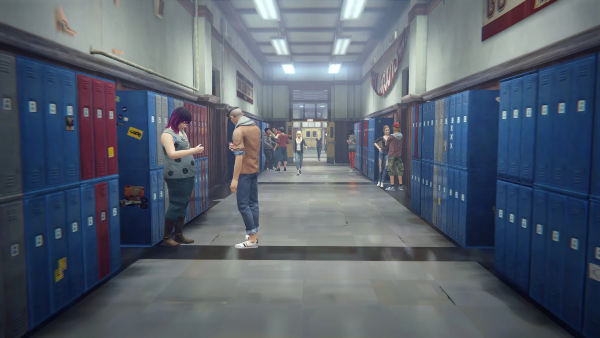
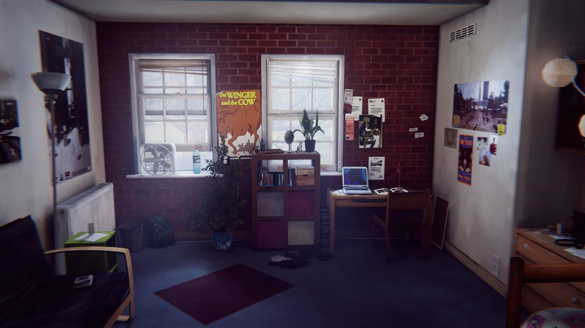
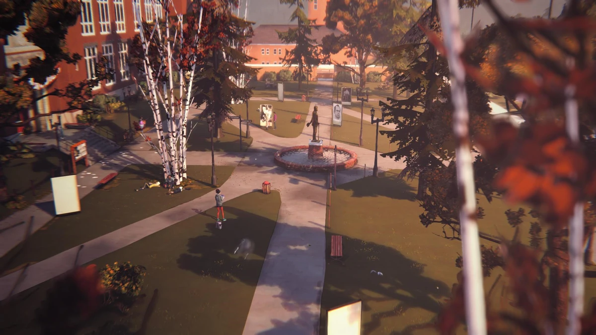
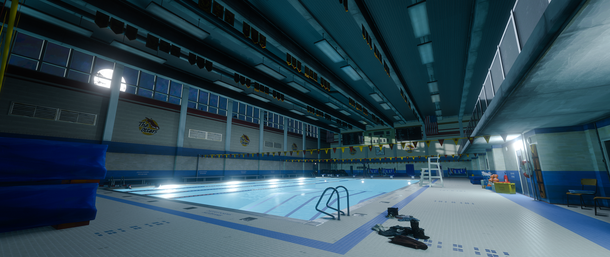
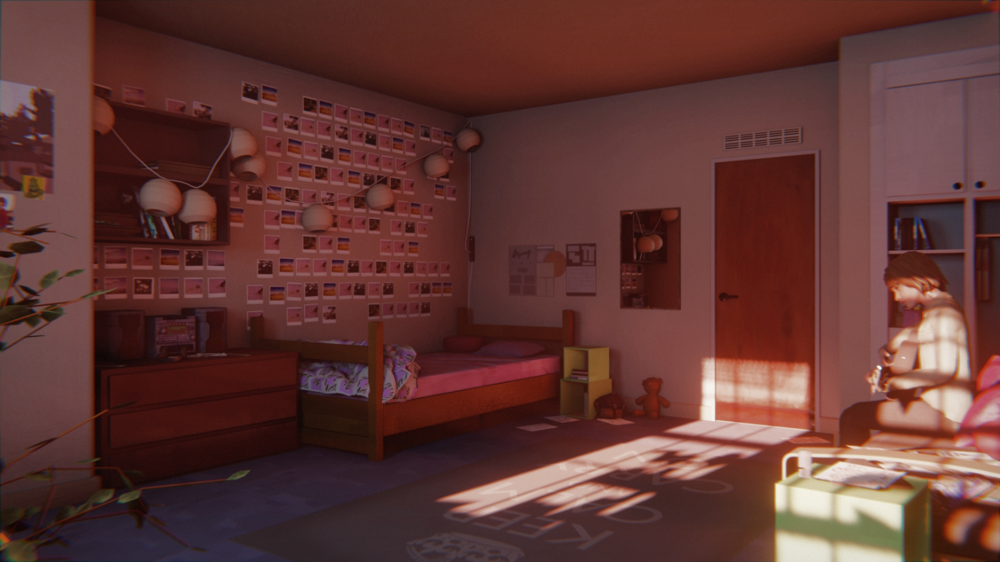
School Info
Welcome to Blackwell Academy, the pride of Arcadia Bay’s arts and sciences. Known for its historic brick architecture and award-winning photography program, Blackwell blends modern creativity with classic campus charm. Students from all over the state come here to explore their passions — from film and design to environmental studies. Walk the hallways and you’ll feel the energy: inspiration on every bulletin board, stories in every classroom, and a community shaped by ambition and curiosity. Whether you're touring the dorms, visiting the gallery, or catching a glimpse of everyday student life, Blackwell promises a glimpse into the heart of Arcadia Bay’s future.